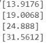

（三）高次多项式回归¶
1.模型类型的选择与超级参数的设置¶
根据相关系数和上一步数据可视化后的散点图，确定用线性回归的方式来建立模型。选择Python统计分析中的常用包Statsmodels。
import statsmodels.api as sm
默认情况下，OLS不含截距项，可以通过如下转换方式来设置截距项这一超级参数。
X_add_const=sm.add_constant(X)
2.训练模型及查看其统计量¶
以北美5G市场数据为例，进行二次多项式回归
X_add_const=sm.add_constant(X)
myModel_updated=sm.OLS(y,X_add_const)
results_updated = myModel_updated.fit()
y_predict_updated = results_updated.predict()
3.拟合优度评价¶
(1)用以下语句输出模型参数：
print(results_updated.summary())
发现R-squared=0.996，说明拟合程度很高。分析其他参数，如AIC等，进一步说明了模型的拟合效果很好。用三次多项式建立模型，比对模型的参数后，发现二次多项式更适合拟合这条曲线，所以选用二次多项式。
(2)通过可视化的方式查看模型回归效果
import matplotlib.pyplot as plt
plt.scatter(df_data['time_series'],df_data['5GNorth'])
plt.plot(df_data['time_series'],y_predict_updated)
4.模型的优化与重新选择¶
用R——square等统计量和数据可视化方法，查看回归效果之后，如果回归效果不好，可以更换多项式次数，即改变模型中的特征矩阵(X).
比如，将北美2G市场规模用二次多项式拟合后，发现效果不好。对比用不同次数多项式拟合的模型的精度，发现用三次多项式拟合更为精准。下面展示北美2G通过三次多项式回归的代码。
import numpy as np
import pandas as pd
import statsmodels.api as sm
df_data = pd.read_excel("2G.xlsx")
print(df_data['time_series'].corr(df_data['2G']))
X=df_data['time_series']
y=df_data['2G']
X=np.column_stack((X,np.power(X,2),np.power(X,3)))
X_add_const=sm.add_constant(X)
myModel_updated=sm.OLS(y,X_add_const)
results_updated = myModel_updated.fit()
y_predict_updated = results_updated.predict()
print(results_updated.summary())
import matplotlib.pyplot as plt
plt.scatter(df_data['time_series'],df_data['2G'])
plt.plot(df_data['time_series'],y_predict_updated)
5.模型的应用¶
用最优的模型进行预测，并输出结果。 比如对北美5G市场进行预测：
d=6
print(results_updated.predict([1,d,np.power(d,2)]))
d=7
print(results_updated.predict([1,d,np.power(d,2)]))
d=8
print(results_updated.predict([1,d,np.power(d,2)]))
d=9
print(results_updated.predict([1,d,np.power(d,2)]))
输出预测结果如下
而对于北美整体市场规模的预测，经计算，时间序列与北美整体规模的相关系数很低，北美整体规模的散点图也显示，整体规模与时间没有线性相关关系。所以本报告分别预测2G、3G、4G的2020年市场规模，与5G加和后，计算出所预测的整体的市场规模。具体预测代码，除多项式次数根据模型参数R-squared、AIC等进行优化调整外，均相同。用此方法预测四个市场2020年的2G、3G、4G、5G以及整体市场规模。